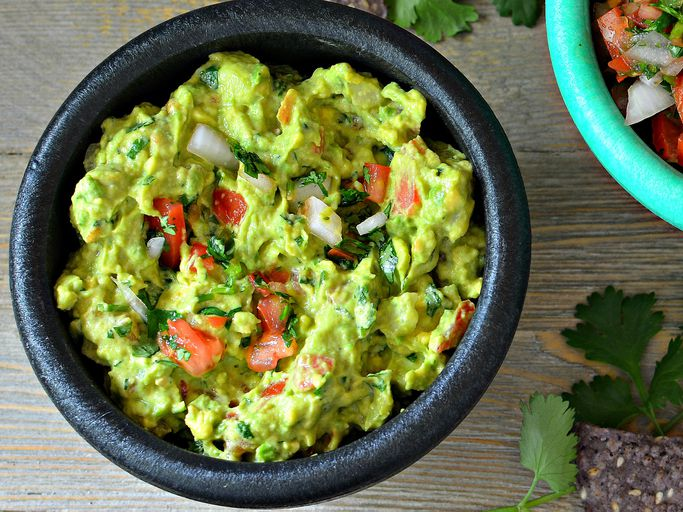

Guacamole

What is guacamole?
Guacamole is an avocado-based dip or spread that originated
in Mexico. It's typically made with mashed avocado and lime
juice, then seasoned with salt and cilantro.
Guacamole often contains tomatoes and onions.
Ingredients
- Avocados: Of course, you'll need avocados!
- Lime: Lime juice adds brightness and slows down the browning process.
- Salt: A teaspoon of salt enhances the flavors of the other ingredients.
- Onion
- Tomatoes
- Fresh cilantro
- Minced garlic
- Cayenne pepper
How to do
- First smash the avocados
- Add a lime juice to give acidity and prevent oxydation
- Mince onion and tomatoes in very tiny pieces (or grind it if you prefer)
- Add all the herbs grinded and the minced garlic
Home